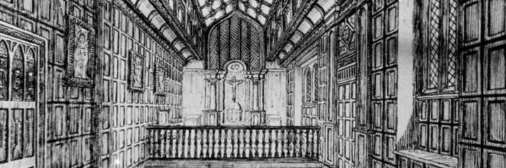

Towneley Hall Chapel

The arms and crest of Richard Towneley and his wife Jane Ashton in the chapel
This part of the building was originally created in the 1530s on the north corner of the south wing but around 1712 it was moved stone by stone to its current position along with its interior woodwork. The panel above the sacristy door is dated 1601 and contains the arms and crest of Richard Towneley and his wife Jane Ashton.
Mass continued to be celebrated here in disobedience of the law from 1559 until 1791 when Catholics were once again allowed freedom of public worship. For more than two hundred years Catholics had came from many miles around to receive Communion. By 1803, the congregation had increased so much that Charles Townley (1737-1805) lowered the ceiling to create a tribune above for the family, allowing the whole of the chapel below to be given over to the public. Finally in 1817, Burnley Wood Chapel on Todmorden Road was completed and Towneley once again became a family chapel.
The drawing above by Rev. Samuel Allen records the chapel around 1838. The major change after that date was the introduction of a Flemish altarpiece in the second half of the 19th century.